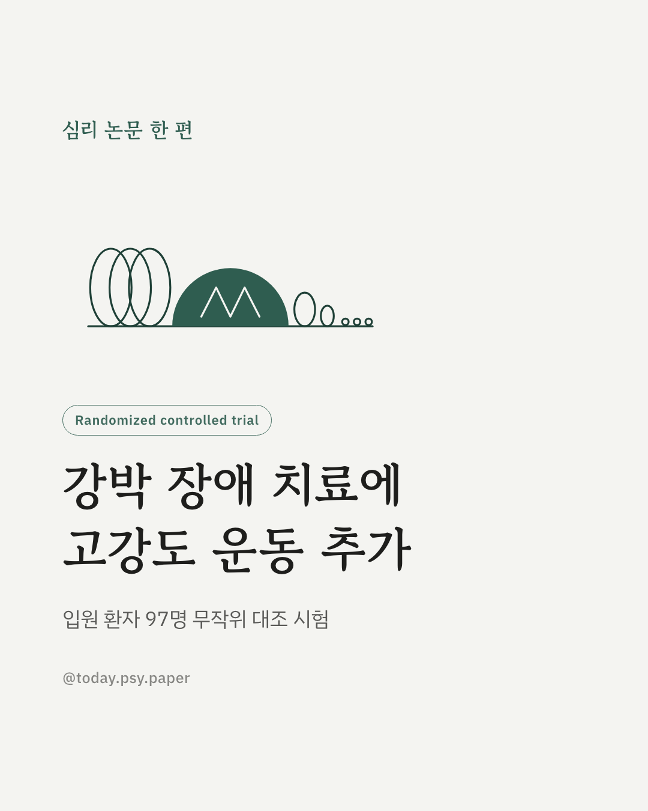
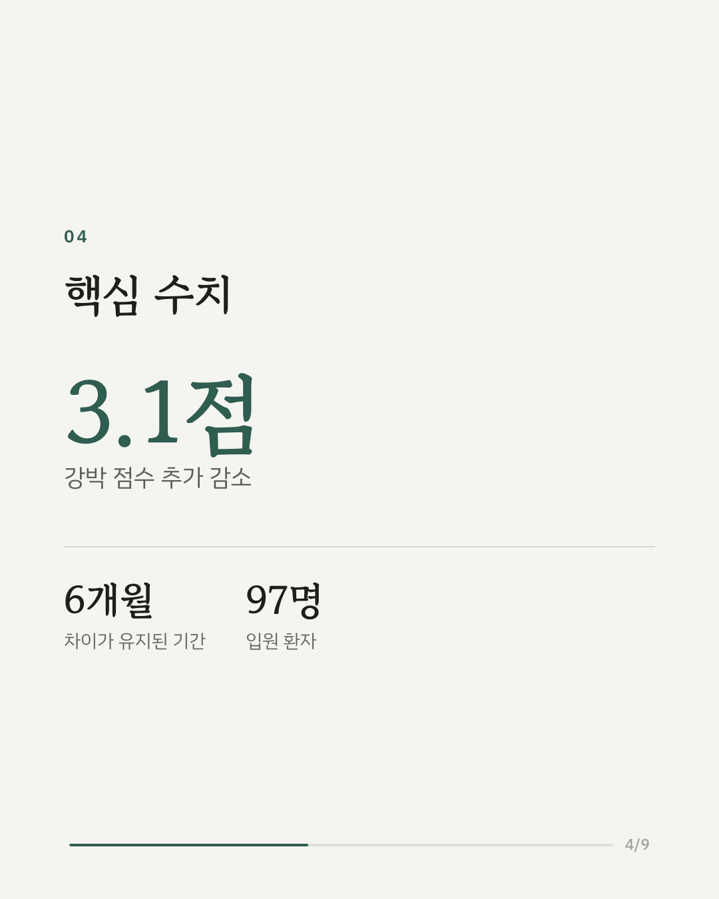
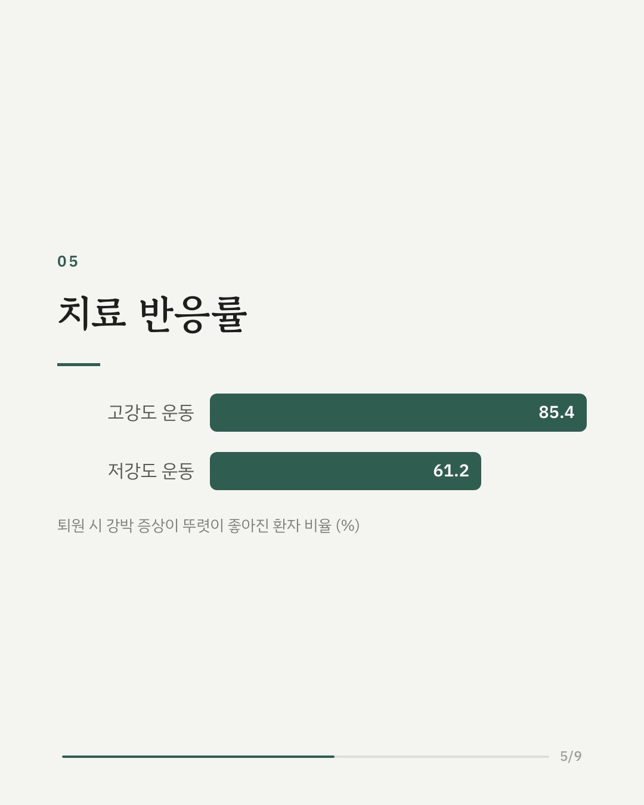
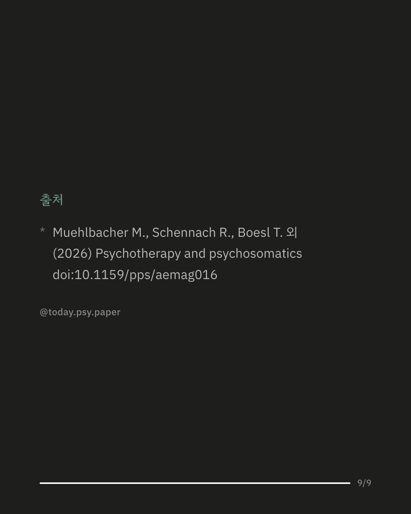

강박 장애 치료의 중심은 두려운 상황에 일부러 다가가는 노출 치료입니다. 불안이나 트라우마 치료에서는 노출 전후에 운동을 하면 효과가 커진다는 연구가 있었지만, 강박 장애에서는 아직 확인된 적이 없었습니다. 연구진은 강박 장애로 입원한 환자 97명에게 8주간 주 2회 노출 치료를 하고, 매 치료 직후 한 그룹은 고강도 운동을, 다른 그룹은 가벼운 저강도 운동을 하도록 무작위로 나눴습니다. 그 결과 고강도 운동 그룹은 퇴원 때 강박 증상 점수가 3점가량 더 줄었고, 이 차이는 6개월 뒤에도 유지됐습니다. 치료에 뚜렷이 반응한 비율도 85%로, 저강도 그룹(61%)보다 높았습니다. 6개월 뒤에는 우울 증상도 고강도 그룹에서 더 낮았습니다. 다만 증상이 거의 사라진 상태에 이른 비율은 두 그룹이 비슷했고, 참가자가 모두 입원 환자여서 외래 치료에서도 같은 결과가 나올지는 아직 알 수 없습니다. 출처: Psychotherapy and Psychosomatics (2026), 'Does high-intensity exercise combined with exposure sessions improve treatment outcomes in obsessive-compulsive disorder? A randomized controlled trial in inpatients' DOI: 10.1159/pps/aemag016 #강박장애 #노출치료 #운동과정신건강 #임상심리 #정신건강정보 #심리학연구 #논문리뷰
python3 publish.py 42814664